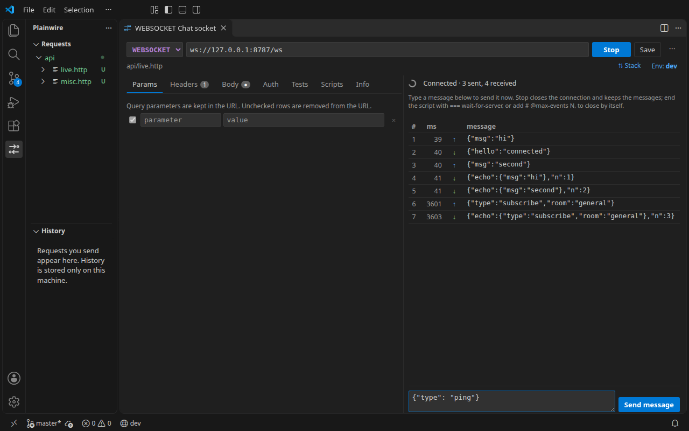

A WebSocket client in VS Code, from a .http file
Plainwire 0.12 opens WebSocket connections from the same .http files as your HTTP requests. You write the messages under the request line, press Send, and see every message in both directions with its time. The script can wait for the server’s replies, and # @assert checks run on what came back, in the editor and in CI.
The syntax is the JetBrains HTTP Client’s (WEBSOCKET, === between messages, === wait-for-server), so a file works in IntelliJ IDEA, WebStorm and VS Code alike. REST Client, the most-installed .http extension, has no WebSocket support: issue #173 asks for it and is still open (28 reactions when we read it on 20 November 2026).

Try it on a public echo server
Put this in a file such as socket.http and press Send above the request:
### Echo
# @assert status == 101
# @assert messages[-1].data.type == ping
WEBSOCKET wss://echo.websocket.org
Content-Type: application/json
{"type": "subscribe", "channel": "orders"}
=== wait-for-server
{"type": "ping", "id": 1}
=== wait-for-server
=== wait-for-server
The first message goes out as soon as the connection is open. Each === wait-for-server line waits for one more message from the server before the next message is sent. Because the script ends with wait lines, Plainwire closes the connection once those replies have arrived, then runs the checks. This echo server sends a greeting first, so the greeting counts as the first reply.
The syntax
| Line | Meaning |
|---|---|
WEBSOCKET wss://host/path | Opens a WebSocket. ws:// and wss:// both work; a bare wss://… URL, or httpYac’s WS keyword, works too. |
| Header lines | Sent with the opening handshake: Authorization, Cookie, Sec-WebSocket-Protocol, Origin and so on. Content-Type is not sent; as in JetBrains, it only says what the messages look like. |
| Text after the blank line | The first message, sent on connect. Several lines make one message. |
=== | Ends a message; the next one is sent right after it. A // comment may follow on the same line. |
=== wait-for-server | Wait for one message from the server (counted since the previous message was sent) before sending the next one. Repeat the line to wait for more. |
< ./frame.bin as a message | Sends that file as a binary message. <@ ./message.json sends it as text with {{variables}} filled in. |
{{variables}} from environments, .env files, chained requests and {{$auth.token("id")}} OAuth tokens work in the URL, headers and every message. Cookies saved by an earlier login request are sent with the handshake, as a browser does.
How a connection ends
| Ends because | Shown as |
|---|---|
The script ends with === wait-for-server and those replies arrived; Plainwire closes with code 1000 | done, all replies arrived |
The server closed the connection (its close code and reason are shown, e.g. 4000 bye) | closed by the server |
| You pressed Stop | stopped |
# @max-events N: N messages received from the server | max events reached |
The time limit ran out: # @timeout 10s on the request, else the plainwire.timeoutMs setting (60 s by default), or --timeout in the CLI | timed out |
Type messages into an open connection
While the connection is open, a message box sits under the live view (since 0.16). Type a message and press Enter (Shift+Enter adds a line): it goes out at once and appears in the list with its reply, as in a chat window. Typed messages are not written into the .http file, and each one restarts the time limit, so a session stays open while you use it.
A script that does not end with a wait line keeps listening until one of the other endings. All of them keep the messages that arrived. If the server refuses the upgrade (for example 401 without a valid token), you get that normal HTTP response with its body, so you can see why.
Checks on messages
messagesis the list of messages received from the server:messages.length,messages[0].data,messages[-1].data.type(JSON messages are parsed).eventsis every message in both directions, in order; each hasevent(sent,message, orbinaryfor bytes in base64),dataandtimeMs.- A plain JSONPath such as
$.statusreads the last JSON message received. status == 101checks that the upgrade worked; the handshake response’s headers work withheader <name>.
In CI
The free plainwire CLI runs the same file. End each script with === wait-for-server (or add # @max-events or # @timeout) so the job does not wait for the full timeout:
$ plainwire run live.http ✓ WEBSOCKET Echo over wss 101 · 228 ms · 1 sent, 2 received (done) · 3/3 checks
That line is from a real run against wss://echo.websocket.org on 20 November 2026. See running .http files in CI for the GitHub Action and JUnit reports.
Details and limits
- Ping frames are answered automatically and not listed. Fragmented messages are joined. Messages up to 64 MB.
- No compression extension (
permessage-deflate) is offered; servers must accept connections without it. wss://through an HTTP proxy usesCONNECT, like HTTPS; self-signed certificates work with# @insecure. Plainws://through a proxy is sent as an absolute-URL request, which some proxies refuse.- Copy as code is for HTTP requests only. Socket.IO, STOMP and other protocols on top of WebSocket are not decoded: you see their frames as text.
- JetBrains response handlers (
> {% %}) run once the connection has ended;response.body.onEachMessagereplays the received messages (scripts guide).
FAQ
Does it work in Cursor, Windsurf and VSCodium?
Yes, it is the same extension. Install the .vsix from the latest release; see installing in Cursor and VSCodium.
What about server-sent events?
They are plain HTTP and work with any method; see server-sent events in VS Code.
Is anything sent to Plainwire?
No. There is no account and no telemetry. The extension makes no network requests except the ones you send, and the source is on GitHub (MIT).